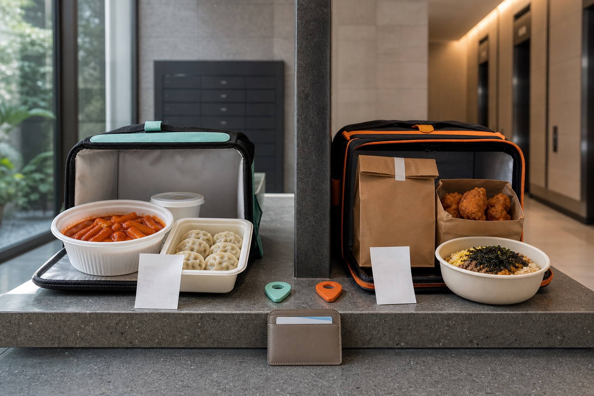

<style>
  .keg-post { --ink:#17212b; --muted:#52616f; --mint:#dff6ef; --line:#d8e2e8; max-width:860px; margin:0 auto; color:var(--ink); font:17px/1.75 system-ui,-apple-system,BlinkMacSystemFont,"Segoe UI",sans-serif; }
  .keg-post h1 { font-size:clamp(32px,5vw,48px); line-height:1.1; letter-spacing:-.03em; }
  .keg-post h2 { margin-top:44px; font-size:28px; line-height:1.25; }
  .keg-post h3 { margin-top:28px; font-size:21px; }
  .keg-post__lead { padding:22px 24px; border-left:6px solid #16a085; background:var(--mint); font-size:19px; }
  .keg-post figure { margin:28px 0; }
  .keg-post img { display:block; width:100%; height:auto; border-radius:18px; }
  .keg-post figcaption { margin-top:10px; color:var(--muted); font-size:14px; }
  .keg-post table { width:100%; border-collapse:collapse; margin:20px 0; }
  .keg-post th,.keg-post td { padding:13px 14px; border:1px solid var(--line); vertical-align:top; text-align:left; }
  .keg-post th { background:#f3f7f8; }
  .keg-post li { margin:9px 0; }
  .keg-post a { color:#0b6f64; text-underline-offset:3px; }
  @media (max-width:640px) { .keg-post { font-size:16px; } .keg-post table { display:block; overflow-x:auto; } .keg-post th,.keg-post td { min-width:180px; } }
</style>

<article class="keg-post">
  <h1>Baemin vs Coupang Eats for Foreigners: Language, Cards, Fees, and Backup Plans</h1>

  <figure>
    
  </figure>

  <p class="keg-post__lead">Baemin and Coupang Eats are both far more usable for foreign visitors than they were a year ago. Baemin now offers English, Japanese, and Chinese in its ordering flow, while Coupang Eats has an English interface and clearly documented pickup and live-tracking features. The practical winner is the app that accepts your exact address, phone setup, and payment method at checkout—not the one advertising the largest discount.</p>

  <h2 data-section="decision">Quick decision: which app should you try first?</h2>
  <table>
    <tr><th>Your situation</th><th>Start with</th><th>Why</th></tr>
    <tr><td>iPhone user with an overseas card already in Apple Pay</td><td>Baemin</td><td>Baemin added Apple Pay support for eligible foreign-issued Visa, Mastercard, JCB, and Amex cards in June 2026.</td></tr>
    <tr><td>You want a clearly listed English iPhone interface</td><td>Coupang Eats</td><td>Its current App Store listing identifies English as a supported language.</td></tr>
    <tr><td>You care most about restaurant choice</td><td>Compare both</td><td>Inventory, menu prices, minimums, delivery modes, and operating hours vary by address and restaurant.</td></tr>
    <tr><td>You want a single meal without a large minimum</td><td>Compare eligible sections</td><td>Baemin advertises a no-minimum “one bowl” program in selected areas; Coupang Eats advertises selected one-item orders with no minimum.</td></tr>
    <tr><td>Neither app passes signup or payment</td><td>Pickup or direct order</td><td>Do not spend dinner time repeating a blocked verification or card flow.</td></tr>
  </table>
  <p>Do not read “free delivery” as a universal zero-cost promise. Both platforms attach eligibility conditions to membership benefits, participating stores, menu items, delivery modes, or regions. Compare the final payable amount after food price, minimum order, delivery charge, small-order charge, coupon, and membership benefit are all visible.</p>

  <h2 data-section="orientation">What changed in 2026—and what still needs a checkout test</h2>
  <p>The biggest change is language. Woowa Brothers’ own engineering account says Baemin opened its multilingual version to customers in February 2026, translating the core order flow plus restaurant and menu data into English, Japanese, and Chinese. That removes much of the old “Korean-only app” disadvantage. It does not guarantee that every merchant-written option, request box, or support conversation will be perfectly translated, so inspect modifiers such as spice level, portion size, and required add-ons before paying.</p>
  <p>Coupang Eats also presents an English-language store page and English feature descriptions. Its official listings emphasize restaurant delivery, grocery shopping, pickup, and real-time courier tracking. However, an English interface is not the same as guaranteed foreign-card acceptance or guaranteed signup without Korean verification. Card approval depends on the checkout path, issuer, fraud checks, and the account in front of you. Treat a successful authorization—not a blog claim—as the final proof.</p>
  <p>Address quality matters just as much as language. A Korean delivery address usually needs the building’s road-name address, the building or complex name, and a unit or room detail. Hotels and guesthouses may restrict door delivery or ask riders to meet in the lobby. Before ordering, ask the front desk whether food riders may enter, which entrance to use, and what Korean wording identifies the property. Pin placement alone can be wrong in a large complex.</p>

  <figure>
    
    <figcaption>A reliable order has four separate gates: deliverable address, usable account, accepted payment, and restaurant confirmation.</figcaption>
  </figure>

  <h2 data-section="steps">A seven-step checkout test before you depend on either app</h2>
  <ol>
    <li><strong>Install from the official store listing.</strong> Use the Baemin or Coupang Eats listing linked below, confirm the developer name, and update the app. Avoid unofficial APK download sites.</li>
    <li><strong>Set the app language and restart if needed.</strong> Baemin’s multilingual system follows the device/app language path described by its engineering team. On iPhone, the current App Store listing shows Korean plus three additional languages. Coupang Eats lists English plus Korean. If menu text remains Korean, close and reopen the app, then use a translation camera only for the untranslated portion.</li>
    <li><strong>Enter the address before choosing food.</strong> Search the road-name address, confirm the map pin, add the building name and unit, and write a short delivery note. For a hotel, use the hotel’s Korean name and lobby instructions approved by reception.</li>
    <li><strong>Run the account and phone check early.</strong> If the app asks for SMS verification or identity information, complete only the official in-app flow. A travel eSIM may provide data without a Korean voice/SMS number. Do not borrow a stranger’s identity or create mismatched account details just to pass checkout.</li>
    <li><strong>Add food, then compare the final total.</strong> Use the same restaurant and a similar basket if possible. Check item prices, mandatory options, minimum order, delivery fee, small-order fee, coupon conditions, membership requirement, and estimated arrival time. A crossed-out delivery fee can coexist with a higher menu price or an ineligible basket.</li>
    <li><strong>Test one payment method once.</strong> On Baemin for iPhone, an eligible overseas card in Apple Pay is now a documented path. If it is unavailable, inspect the card options shown to you. On Coupang Eats, use only payment methods actually offered at checkout. If the issuer declines the transaction, confirm travel/online payments with the issuer before repeatedly retrying.</li>
    <li><strong>Wait for restaurant acceptance.</strong> A payment screen or card authorization is not the same as a confirmed meal. Keep notifications enabled and watch the order status. If the store rejects the order, check the app’s cancellation/refund status before placing a second order elsewhere.</li>
  </ol>

  <h2>Baemin compared with Coupang Eats</h2>
  <table>
    <tr><th>Decision factor</th><th>Baemin</th><th>Coupang Eats</th></tr>
    <tr><td>Languages</td><td>Officially launched English, Japanese, and Chinese alongside Korean in 2026.</td><td>Current iPhone listing shows English plus Korean.</td></tr>
    <tr><td>Foreign-card path</td><td>Eligible foreign-issued cards can use Apple Pay; other displayed card flows may still have their own checks.</td><td>Do not assume universal support; test the exact payment method offered in your account.</td></tr>
    <tr><td>Single-person orders</td><td>“Baemin One Bowl” advertises selected no-minimum, free-delivery orders, with regional and service restrictions.</td><td>Advertises selected one-item orders without a minimum; eligibility is determined at order time.</td></tr>
    <tr><td>Membership</td><td>Baemin Club benefits apply only to eligible member stores and delivery modes.</td><td>WOW benefits apply to eligible deliveries, stores, and items shown at order time.</td></tr>
    <tr><td>Pickup</td><td>Official listing offers advance pickup from nearby restaurants.</td><td>Official listing offers advance pickup with no pickup minimum.</td></tr>
    <tr><td>Tracking</td><td>Official listing says rider location can be viewed in delivery status for supported delivery types.</td><td>Official listing describes live map updates for the delivery partner.</td></tr>
  </table>
  <p>The comparison is deliberately conditional. Promotions and coverage change quickly, and the two apps can show different totals for the same restaurant. Screenshots from another traveler do not prove that your address, phone number, card, or membership will receive the same result.</p>

  <h2>Costs, payment, cancellation, and refund checks</h2>
  <p>There is no fixed “Baemin price” or “Coupang Eats price.” The useful number is the final checkout total. Restaurant menu prices can differ by platform or from the in-store menu. Delivery and small-order charges may change with distance, weather, demand, membership, delivery mode, or promotion. Compare totals before applying a coupon because a coupon may require a minimum basket or a particular payment method.</p>
  <p>For Baemin, the clearest current foreign-card option is Apple Pay on iPhone with an eligible overseas-issued Visa, Mastercard, JCB, or Amex card. Availability still depends on Apple Pay support, the issuer, and the checkout presented in the app. For Coupang Eats, the official listing describes card scanning for payment registration but does not promise that every foreign card or every no-phone-number setup will work. Keep a second internationally enabled card, and decide on a non-app backup before hunger turns a five-minute test into a long support problem.</p>
  <p>Cancel immediately if the address or order is wrong, but do not assume cancellation is automatic after the restaurant starts preparing food. Use the order-detail screen and the platform’s customer-support channel. Baemin’s iPhone listing gives its main support number as 1600-0987, operated 24 hours; Coupang Eats lists 1670-9827 and eatshelp@coupang.com. Save the order number, status, charge amount, and screenshots. If you see an authorization after an order is rejected, first determine whether it is a temporary hold or a completed charge.</p>
  <p>Korean authorities have required delivery platforms to accept responsibility within their own fault for problems such as missing food or delivery delay, rather than using blanket exclusions. That does not mean every late meal earns an automatic full refund. Report the concrete problem through the order record: missing item, wrong item, unsafe food, non-delivery, or material delay. For unresolved consumer disputes, Korea’s Consumer Counseling Center uses 1372; for suspected unsafe or contaminated food, the Ministry of Food and Drug Safety’s Food Safety Korea service lists 1399.</p>

  <h2 data-section="pitfalls">Where foreign users most often lose time</h2>
  <ul>
    <li><strong>Choosing food before validating the address.</strong> The restaurant list can change completely after the correct building pin is entered.</li>
    <li><strong>Assuming a data-only eSIM receives Korean SMS.</strong> Confirm whether your plan includes an actual phone number and inbound texts.</li>
    <li><strong>Confusing interface language with translated merchant content.</strong> Check required options, allergy notes, and portion descriptions carefully.</li>
    <li><strong>Reading “0 won delivery” without its conditions.</strong> Membership, store, menu, delivery mode, and region restrictions can all matter.</li>
    <li><strong>Placing a duplicate order after a slow confirmation.</strong> Check order history and card activity before switching apps.</li>
    <li><strong>Entering only an English hotel name.</strong> Add the Korean property name, road address, entrance, and lobby note.</li>
    <li><strong>Expecting a rider to negotiate unavailable substitutions.</strong> Keep notifications on and respond quickly if the restaurant contacts you.</li>
    <li><strong>Deleting evidence during a dispute.</strong> Preserve the order number, receipt, photos, chat, status, and time stamps until the issue closes.</li>
  </ul>

  <h2>Reliable alternatives when both apps fail</h2>
  <p><strong>Use pickup.</strong> Both apps advertise pickup. It avoids the room-number and rider-entry problem, though account and payment gates can remain. Confirm the branch and pickup time because chains often have multiple nearby locations.</p>
  <p><strong>Ask the accommodation to help without sharing payment credentials.</strong> A hotel or guesthouse can confirm the Korean address and delivery point. Some may place an order for you under their own policy; ask before assuming this service is available, and settle payment in the method they approve.</p>
  <p><strong>Order directly from a restaurant that accepts telephone or in-person orders.</strong> This works best when staff can communicate with you and when you can pick up. A translated note with the exact menu, quantity, allergy restriction, and desired pickup time is more useful than a long conversation.</p>
  <p><strong>Buy a meal nearby.</strong> Convenience stores, supermarkets, department-store food halls, and restaurant streets are the dependable fallback. Food delivery should save time, not become the only way you can eat late at night.</p>

  <h2 data-section="faq">FAQ</h2>
  <h3>Does Baemin have English now?</h3>
  <p>Yes. Woowa Brothers says its multilingual ordering version opened to customers in February 2026 with English, Japanese, and Chinese. Some merchant-entered text or support interactions may still require translation help.</p>
  <h3>Does Coupang Eats have an English interface?</h3>
  <p>Yes. Its current Korean App Store listing identifies English and Korean as supported languages, and the listing itself provides English feature descriptions.</p>
  <h3>Can I use a foreign credit card on Baemin?</h3>
  <p>Baemin added Apple Pay support for eligible overseas-issued Visa, Mastercard, JCB, and Amex cards in June 2026. That is the clearest documented route. Issuer approval and the payment options shown in your account still control the result.</p>
  <h3>Can I use a foreign card on Coupang Eats without a Korean phone number?</h3>
  <p>Do not treat this as guaranteed. The official store pages do not promise that every overseas card or account setup will pass. Test signup, address, and payment before relying on the order, and keep a pickup or nearby-food backup.</p>
  <h3>Which app is cheaper?</h3>
  <p>Neither is always cheaper. Compare the same restaurant and basket at the same address, then look at the final amount after menu price, minimum, delivery charge, small-order charge, coupon, and membership conditions.</p>
  <h3>Can I cancel after the restaurant accepts the order?</h3>
  <p>Cancellation may be restricted once preparation begins. Submit the request immediately through the order details or customer support and wait for the recorded outcome before ordering again.</p>
  <h3>What should I do if food never arrives or an item is missing?</h3>
  <p>Open the order record, contact the platform, and provide the order number plus concise evidence. Keep screenshots and photos. Escalate an unresolved consumer dispute through 1372, or a genuine food-safety concern through Food Safety Korea’s 1399 channel.</p>

  <h2 data-section="related_guides">Related Guides</h2>
  <ul>
    <li><a href="https://koreaeasyguide.blogspot.com/2026/07/how-to-use-coupang-eats-as-foreigner.html">How to Use Coupang Eats as a Foreigner</a></li>
    <li><a href="https://koreaeasyguide.blogspot.com/2026/07/korea-delivery-address-format-guide-for.html">Korea Delivery Address Format Guide for Foreigners</a></li>
    <li><a href="https://koreaeasyguide.blogspot.com/2026/07/coupang-for-foreigners-in-korea-setup.html">Coupang for Foreigners in Korea: Setup, Payment, Delivery, and Returns</a></li>
  </ul>

  <h2 data-section="sources">Official and platform sources verified for this guide</h2>
  <ul>
    <li><a href="https://apps.apple.com/kr/app/%EB%B0%B0%EB%8B%AC%EC%9D%98%EB%AF%BC%EC%A1%B1-%EB%B0%B0%EB%8B%AC%ED%8C%81-%EB%AC%B4%EB%A3%8C-%EB%B0%B0%EB%AF%BC%ED%81%B4%EB%9F%BD/id378084485" target="_blank" rel="noopener noreferrer">Baemin on the Apple App Store</a></li>
    <li><a href="https://play.google.com/store/apps/details?gl=KR&amp;id=com.sampleapp" target="_blank" rel="noopener noreferrer">Baemin on Google Play</a></li>
    <li><a href="https://techblog.woowahan.com/26162/" target="_blank" rel="noopener noreferrer">Woowa Brothers: Baemin multilingual rollout</a></li>
    <li><a href="https://apps.apple.com/kr/app/coupang-eats-food-delivery/id1445504255?l=en-GB" target="_blank" rel="noopener noreferrer">Coupang Eats on the Apple App Store</a></li>
    <li><a href="https://play.google.com/store/apps/details?gl=KR&amp;id=com.coupang.mobile.eats" target="_blank" rel="noopener noreferrer">Coupang Eats on Google Play</a></li>
    <li><a href="https://www.korea.kr/news/policyNewsView.do?newsId=148891774" target="_blank" rel="noopener noreferrer">Korean government briefing on delivery-platform responsibility</a></li>
    <li><a href="https://www.foodsafetykorea.go.kr/portal/complain/complainIntro.do" target="_blank" rel="noopener noreferrer">Food Safety Korea reporting center</a></li>
  </ul>

  <h2 data-section="summary">Final summary</h2>
  <p>Baemin is now a strong first choice for an iPhone user who wants multilingual menus and has an eligible foreign card in Apple Pay. Coupang Eats remains a strong comparison choice for English navigation, pickup, live tracking, and whatever payment methods its checkout offers your account. Install both only if you have time to test them calmly: validate the address, account, final price, card, and restaurant acceptance in that order. If any gate fails, stop retrying and move to pickup, accommodation help, a direct restaurant order, or nearby food.</p>
</article>
